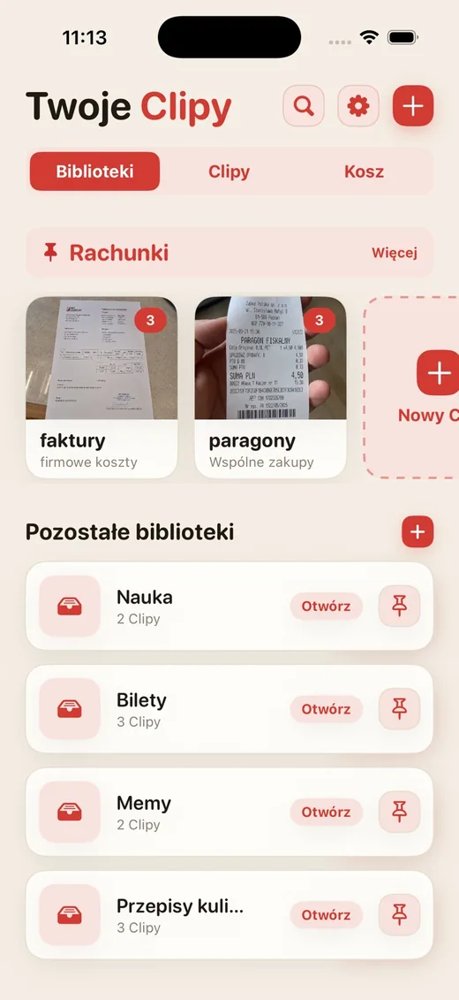
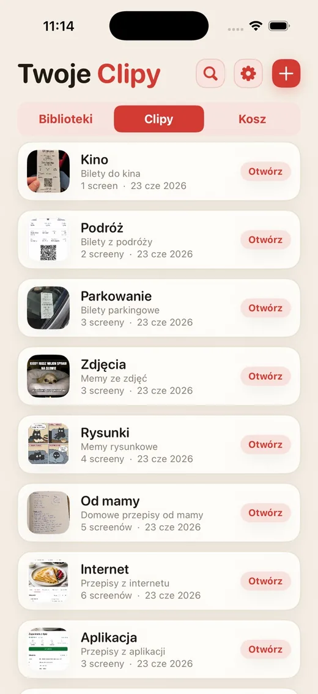
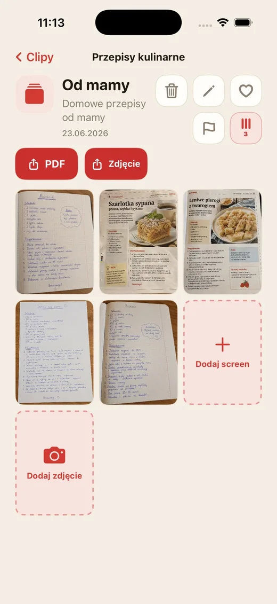
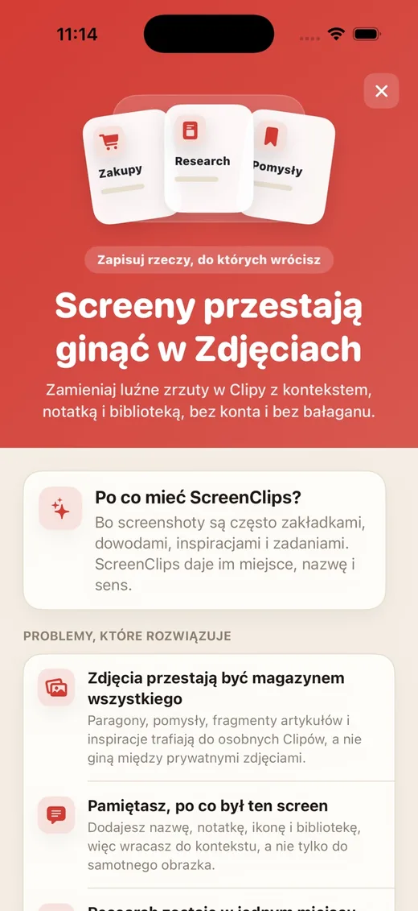

Ekran görüntüsü kalabalıkta kaybolur
Önemli bir şeyi kaydedersin, bir hafta sonra galeriyi dosya inceler gibi tararsın.
Dağınık ekran görüntülerini adı, notu ve kendi kitaplığı olan Clip'lere dönüştür. Hesap yok, bulut yok, aradığın şeyi bulmak için galeride kazı çalışması yok.

Fişler, tarifler, biletler, fikirler ve makale parçaları; selfie'lerin, memlerin ve yanlışlıkla çekilen görüntülerin arasında kayboluyor. Bulutu icat ettik, yine de otelin adresinin olduğu ekran görüntüsünü bulamıyoruz.
Önemli bir şeyi kaydedersin, bir hafta sonra galeriyi dosya inceler gibi tararsın.
Tek başına görüntü çoğu zaman yetmez. ScreenClips ad ve not eklemeni sağlar.
Alışveriş, iş, seyahat ve çalışma ayrı yerleri hak eder; Fotoğraflar'da tek bir yığın olmayı değil.
Tarifleri, fişleri, biletleri, araştırmaları, ders notlarını veya tekrar bulmak istediğin her şeyi ayır.
Clip, belirli bir konu etrafındaki her şeyi toplar. Bir adı, açıklaması ve kendi ekran görüntüleri vardır.
Kitaplığı aç, Clip'i seç ve her şey yanında olsun. Galeride uzun yürüyüşlere gerek yok.

ScreenClips senin yerine her şeyi tahmin etmeye çalışmaz. Basit bir yapı verir: konu için kitaplık, somut iş için Clip, içinde ekran görüntüleri ve fotoğraflar.
İçeriği Clip'lerin içinde topla, konu büyüdükçe eklemeye devam et.
Bir Clip'i göndermek veya uygulama dışında saklamak istediğinde temiz bir dosyaya dönüştür.
Eskiden sadece kaydırma ve iç çekme olan yerde favoriler, işaretler ve düzen.

ScreenClips yerelde çalışır. Düzen kurmak için hesap açmana ya da fişlerini, notlarını ve planlarını başka bir hizmete teslim etmene gerek yok.
Premium uygulamayı karmaşıklaştırmaz. Kitaplıklar, Clip'ler ve ekran görüntüleri için daha fazla alan verir. Fiyat App Store'da gösterilir.
App Store'danindir
Hayır. Bir görüntüyü Clip'ten kaldırmak Fotoğraflar'daki orijinali silmez.
Evet. ScreenClips iPhone'unda yerel çalışan bir düzenleyici olarak tasarlandı.
Hayır. ScreenClips, Clip'lerini düzenlemek için hesap gerektirmez.
Evet. Bir Clip'e ait olduklarında ekran görüntülerini ve fotoğrafları ekleyebilirsin.
ScreenClips “sonra bakarım” diye sakladığın şeyleri düzenler. Bu kez sonra gerçekten bulunabilir.
App Store'danindir